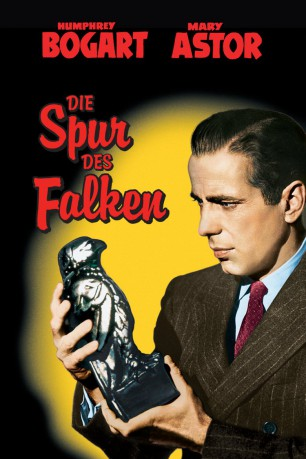

#3411 Die Spur des Falken
Alternativ: The Maltese Falcon
Auszeichnungen: für 3 Oscars nominiert
 
 IMDB-Wertung: 8.1 / 10
IMDB-Wertung: 8.1 / 10  IMDB-TOP-Platzierung: 227
IMDB-TOP-Platzierung: 227  Metascore: 96
Metascore: 96 
Im Auftrag einer Frau beschattet Privatdetektiv Miles Archer einen Mann. Doch schnell entwickelt sich der anfängliche Routineauftrag für Archers Partner, den hartgesottenen, zynischen Sam Spade (Humphrey Bogart), zu einer heimtückischen Falle: Als sowohl Archer als auch der zu beschattende Mann ermordet werden, gerät Spade selber unter Mordverdacht. Bei seinen Recherchen stößt er auf eine Gruppe zwielichtiger Gestalten, die alle einer wertvollen Statue hinterherjagen: dem geheimnisvollen Malteser Falken.
Jahr: 1941
Dauer: 100 Minuten
FSK: 12
Land: USA Studio: Warner Bros. Pictures Inc.Tonspuren:
Untertitel: Englisch, Deutsch,
Auflösung: 1080p (1488x1080) Größe: 6871 MB
Genre: Drama, Krimi, Mystery,
Regisseur:  John Huston
John Huston
Drehbuch: John Huston, Dashiell Hammett
Soundtrack: Adolph Deutsch
Darsteller:
 Humphrey Bogart als Samuel Spade
Humphrey Bogart als Samuel Spade- Mary Astor als Brigid O'Shaughnessy
- Gladys George als Iva Archer
 Peter Lorre als Joel Cairo
Peter Lorre als Joel Cairo Barton MacLane als Lt. of Detectives Dundy
Barton MacLane als Lt. of Detectives Dundy- Sydney Greenstreet als Kasper Gutman
 Ward Bond als Detective Tom Polhaus
Ward Bond als Detective Tom Polhaus Elisha Cook Jr. als Wilmer Cook
Elisha Cook Jr. als Wilmer Cook- John Hamilton als Bryan
- William Hopper als Reporter , uncredited
- Walter Huston als Captain Jacoby , uncredited
 Emory Parnell als Ship's Mate , uncredited
Emory Parnell als Ship's Mate , uncredited- Lee Patrick als Effie Perine
- Jerome Cowan als Miles Archer
- James Burke als Luke
 Murray Alper als Frank Richman
Murray Alper als Frank Richman- Chester Gan als Bit Part , uncredited
- Creighton Hale als Stenographer , uncredited
- Robert Homans als Policeman , uncredited
 Hank Mann als Reporter , uncredited
Hank Mann als Reporter , uncredited Jack Mower als Announcer , uncredited
Jack Mower als Announcer , uncredited
Datei: X:\1900-1949\Spur des Falken, Die (1941, FSK12, 1488x1080).mkv seit 02.04.2016
Festplatte: HD 1900-1970
 Es gibt insgesamt 80 Filme in der Gruppe '1900-1949'
Es gibt insgesamt 80 Filme in der Gruppe '1900-1949'